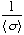

Several buffers are available in Gifa. The three main buffers (for
1D, 2D and 3D) are chosen with the DIM command. Those 3 are the only
one on which generic processing is available.
Other buffers are
available :
DATA Is a generic buffer designed to be a « second
hand ». It can hold 1D, 2D or 3D data-sets, accessed with
GET and PUT.
You can also exchange the content of the working buffer with the
content of DATA, sizes should match in this case.
The current
buffer can also be modified according to the content of the DATA
buffer with the ADDDATA,
MULTDATA, MINDATA
and MAXDATA commands. ADDDATA
and MULTDATA respectively add/mult the content of the DATA
buffer to/with the current data-set. MINDATA
and MAXDATA leaves in the
current data-set, at each data point, the smallest (respectively
largest) of the DATA buffer and
the current data-set; they can be used to create home-made, fast
symmetrisation macros. All these commands modify only the content of
the current data-set, and leave the DATA
buffer untouched.
are special purpose 1D buffers. They are designed for specific actions :
TAB contains the series of X values, when the current 1D buffer is considered to hold scattered Y values. This permits to do scatter plot (SHOWLINEAB command) and is used by several other modules (such as FITGENE or INVTLAP).
FILTER holds an apodisation function, used with the APPLY FILTER command (only if the FILTER context is set to 2). In 2D or 3D, F1, F2 and F3 domains will be sequential in the buffer. You can design an exotic apodisation function, put it in the FILTER buffer, and use it.
WINDOW is the description of valid points within the data-set (more precisely of ). Thus a null value in WINDOW indicate a point with total uncertainty. WINDOW usually holds 0.0 or 1.0 entries, but any real values are valid though negative values have little meaning. The command WINDOW permits to design the WINDOW function; by resting it to 1.0, or by « digging » holes in it. WINDOW is used by BCORR 3, MAXENT, FITGENE etcÉ It is useful also to put to zero a certain region in a data set (for instance to remove the water curtain in 3D).
However, you might use them to simply GET and PUT, if you are
searching for additionnal hands. Be carefull though not to erase
important information which was already held in there.
Other
buffers are available, used by the MaxEnt or the line-fitting
package, see the specific documentation.
are used to manipulate the different buffers.
PUT
(P) loads the given buffer with the current data-set
GET
(G) brings back the given buffer as the current data-set
SHOW
(S) displays the given information in the 1D window or in the 2D
window
APPLY (A) computes the
result of the mathematical operation.
|
The buffer : |
can be : |
S |
G |
P |
A |
|
WINDOW |
window used to compute the chisquare in MaxEnt processing, also used by the polynomial mode of BCORR |
* |
* |
* |
* |
|
TAB |
small buffer used to hold tabulated value, used by the general fitter, and the MaxEnt inverse Laplace transform. |
* |
* |
* |
|
|
FILTER {n } |
Generic filter function, also used for MaxEnt Deconvolution |
* |
* |
* |
* |
|
DATA |
data used as a second hand by MaxEnt and Linear Prediction, also used as a general purpose buffer. |
* |
* |
* |
|
|
LAMB |
the evolution of Lambda during MaxEnt iteration |
* |
* |
|
|
|
ENT |
the evolution of Entropy during MaxEnt iteration |
* |
* |
|
|
|
CHI |
the evolution of ChiSquare during MaxEnt iteration |
* |
* |
|
|
|
STEP |
the evolution of Step during MaxEnt iteration |
* |
* |
|
|
|
SUM |
the evolution of Sum of point of Image during MaxEnt iteration |
* |
* |
|
|
|
CONV |
the evolution of Convergence during MaxEnt iteration |
* |
* |
|
|
|
RESIDUE |
The residue after a MaxEnt run |
* |
* |
|
|
|
LINEFIT |
The result of the last line fitting |
* |
* |
|
|
|
AMOEBA |
the contours used for integration during the last 2D Paris integration |
* |
* |
* |
|
|
FT |
The causal Fourier transform (FTBIS) of the current data-set |
* |
|
|
|
|
CURRENT |
the current data-set (useful for comparing with SHOW) |
* |
|
|
|
|
PLANE Fi n |
the nth plane of the 3D data-set, along axis Fi (F1, F2 or F3) |
|
|
* |
|
|
ROW n |
the nth row of the 2D data-set |
|
|
* |
|
|
COL n |
the nth col of the 2D data-set |
|
|
* |
|
The command SHOW uses,
for some option, the value of the context SCOLOR
to determine the colour to be used by the display.
The two
commands GET DATA and PUT
DATA permit to put aside a data set for a while and
getting back to it very quickly. Note however that the size of the
larger data-set that can be put aside this way is only a fourth of
the larger Gifa data-set.
The PUT FILTER
command (to be issued in 1D mode) has a syntax which depends on the
setting of the NCHANNEL context.
NCHANNEL describe how many
independent channels will be considered in the filter window. If
NCHANNEL is 1, then the current
data-set will become the filter function. If NCHANNEL
is greater than 1, then the command will prompt you for which channel
to load the filter function in. This permits to build a 2D or 3D
filter function (in which case, the i channel corresponds to the i
dimension); or to build multichannel deconvolution functions for
MaxEnt. If the channel index 0 is given, then the action is as in 1D.
The command PUT permits to
put the content of one lower dimension buffer into a higher data-set.
You can thus PUT ROW index or
PUT COL index in 2D or PUT
PLANE index in 3D :
Gifa>
ROW 1 DIM 1 MULT 0.5 DIM 2 PUT ROW 1
will divide by 2
the first row of the data-set.